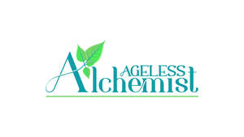

Trade Mark Journal No.2025/048 28 November 2025
UK00004287837 1 November 2025 (3)

- Class 3
- Skincare cosmetics; Anti-aging skincare preparations; Anti-aging moisturizers used as cosmetics; Skincare preparations; Moisturisers [cosmetics]; Anti-ageing moisturiser; Anti-ageing creams [for cosmetic use]; Anti-aging creams [for cosmetic use]; Moisturising skin lotions [cosmetic]; Beauty serums; Non-medicated skincare preparations; Facial moisturisers [cosmetic]; Skin cleansers [cosmetic]; Moisturising skin creams [cosmetic]; Beauty serums with anti-ageing properties; Facial creams [cosmetics]; Anti-aging creams; Anti-ageing serums for cosmetic purposes; Skin balms [cosmetic]; Moisturisers; Beauty care cosmetics; Skin recovery creams [cosmetics]; Cosmetic creams for the skin; Skin creams [for cosmetic use]; Facial cleansers [cosmetic]; Anti-wrinkle creams [for cosmetic use]; Cosmetic nourishing creams; Skin masks [cosmetics]; Skin cleansers; Moisturiser; Cleansing creams [cosmetic]; Skin moisturizer masks; Anti-ageing serum; Exfoliants for the care of the skin; Non-medicated skin serums; Body and facial creams [cosmetics]; Cosmetic creams and lotions; Skin care oils [cosmetic]; Exfoliants for the cleansing of the skin; Anti-aging serum for cosmetic use; Moisturising body lotion [cosmetic]; Beauty creams; Beauty balm creams; Skin cleansing lotion; Skin toners [cosmetic]; Facial creams [cosmetic]; Exfoliating creams; Skin cleansers [non-medicated]; Anti-aging cream; Cosmetics for use in the treatment of wrinkled skin; Organic cosmetics; Skin hydrators; Cleansing lotions; Skin hydrators for cosmetic purposes; Night creams [cosmetics]; Facial gels [cosmetics]; Anti-wrinkle creams; Facial cleansers; Exfoliant creams; Anti-wrinkle cream [for cosmetic use]; Cosmetic preparations for skin firming; Moisturising creams; Moisturising gels [cosmetic]; Skin creams; Skin care (Cosmetic preparations for -); Cosmetic preparations for skin care.
Ageless Alchemist LTD
Sharon Yvonne Woodward